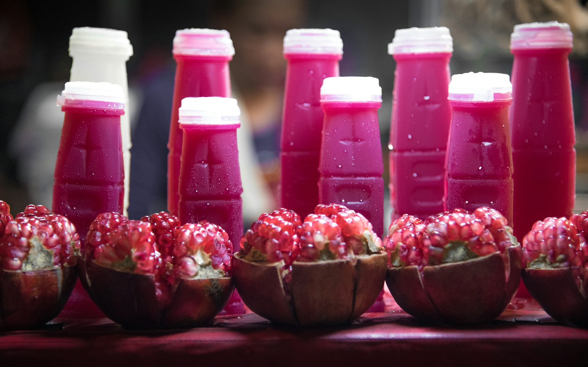
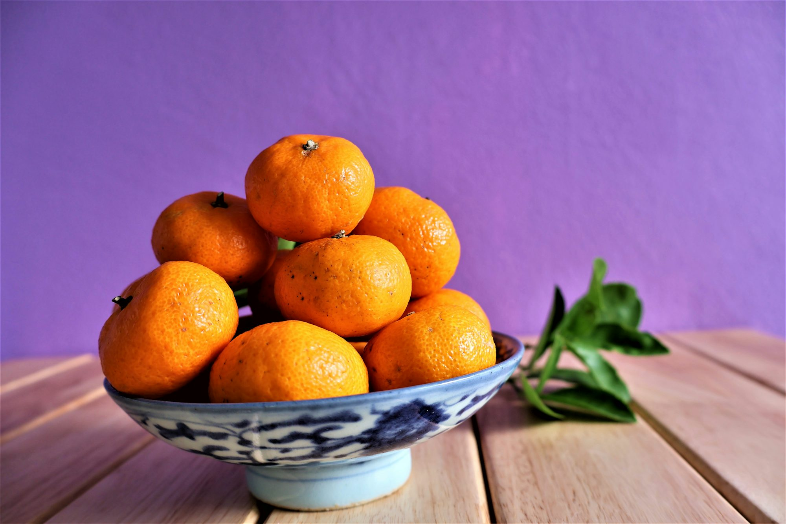
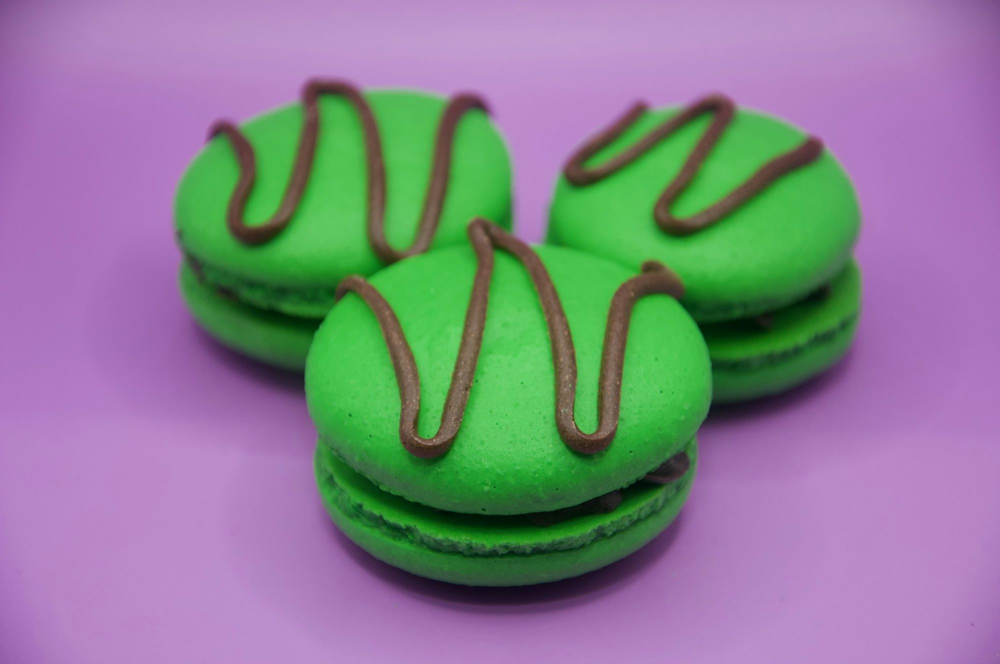
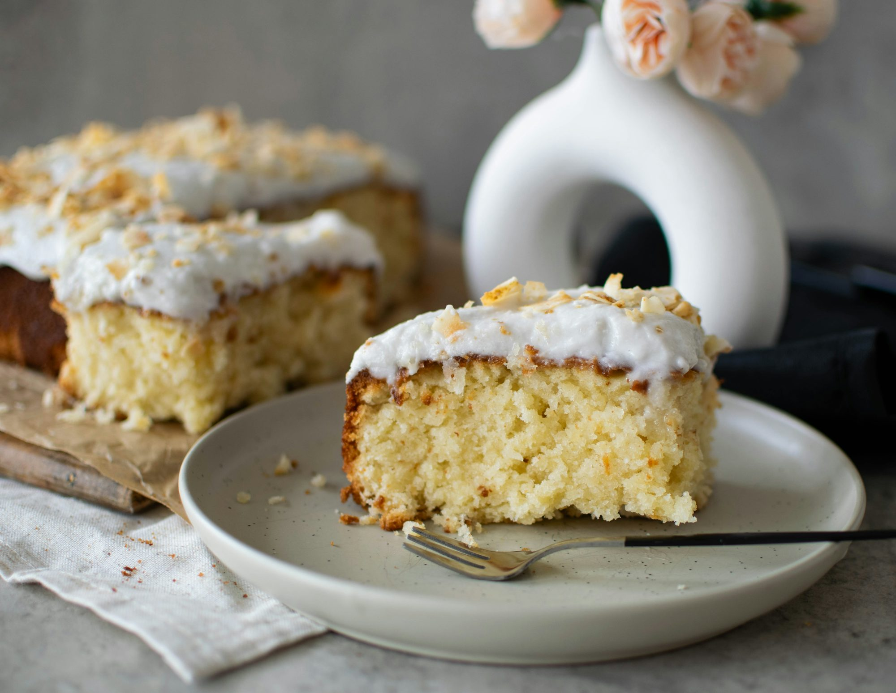
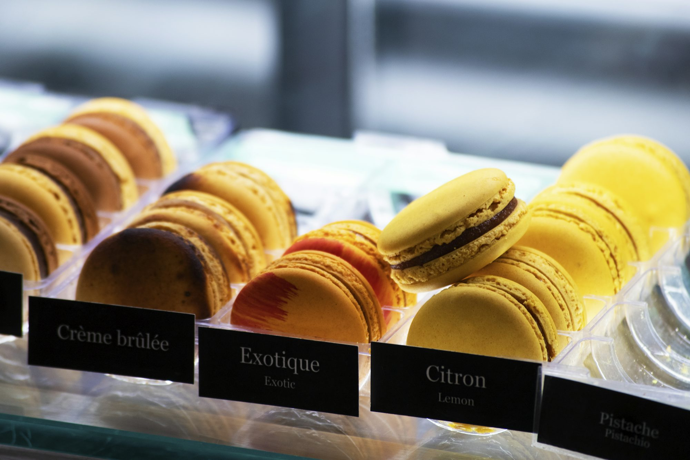

Juicing for Joy: Discovering the Benefits of Fresh Juice Creations
An engaging exploration of the joys and health benefits of juicing, featuring recipes, tips for crafting unique blends, and the impact of fresh juices on daily wellness.Visual diary



Curated reads
25-11-25
The Allure of Book Cafés: A Sanctuary for Readers and Writers
This article explores the enchanting world of book cafés, discussing how they blend the love of literature with the joy of coffee, creating spaces for reading, writing, and community engagement.

25-09-16
Layers of Delight: Exploring the World of Cakes
This article dives into the rich history, diverse types, and cultural significance of cakes, celebrating their role in celebrations and everyday life.
25-11-24
Jessica Harmon

Decadent Delights: Exploring the World of Chocolate Desserts
26-01-19
Liam Thompson

The Allure of Pet-Friendly Cafés: A Growing Trend for Animal Lovers
This article explores the rise of pet-friendly cafés, highlighting their unique offerings, community benefits, and the joy they bring to pet owners and their furry companions.
Savoring Sustainability: The Rise of Plant-Based Proteins
An exploration of the growing trend of plant-based proteins, their benefits, culinary versatility, and the impact on health and the environment.
25-07-28
Lucas Bennett
25-07-12
Sophia Miller
Exploring the World of Cold Press Juices: Benefits, Trends, and Flavor Innovations
This article explores the growing trend of cold press juices, highlighting their benefits, the unique flavor profiles they offer, and how they fit into the modern health-conscious lifestyle. It also covers emerging trends and innovations in the juice industry that are shaping the future of cold-pressed beverages.
25-07-24
Ava Johnson
Juicing for Wellness: Exploring the Benefits of Fresh Juices
An insightful exploration into the world of fresh juices, highlighting their benefits, varieties, and how to incorporate them into a healthy lifestyle.
Lucas Bennett
Savoring the Seasons: A Culinary Journey Through Seasonal Ingredients
Explore the beauty and benefits of cooking with seasonal ingredients, including tips, recipes, and insights into the art of seasonal cuisine.